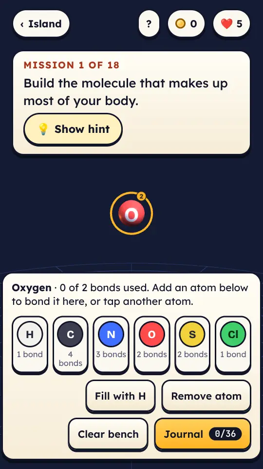

All labs › Chemistry › Molecules
Chemistry lab · Amma Jaya's Kitchen
Molecules
अणु · असली अणु बनाओ
Build real molecules atom by atom, from water and carbon dioxide to methane and beyond. Each atom can only hold a set number of bonds, so the puzzle is getting every "hand" filled.
- Chemistry
- Inventor · ages 10+
- 36 discoveries
- English · हिंदी
- Free, no sign-up

How it works
Build water, H₂O
- The oxygen (O) on the bench is already selected.
- Add two hydrogen (H) atoms. Each one bonds to one of oxygen's two hands.
- Every hand is now holding something, so the molecule is finished: H₂O.
Stuck? Every level has a hint, and a "Show me" walk-through.
Why it works
The big idea
Think of atoms as people with a fixed number of hands: hydrogen has one, oxygen two, nitrogen three, carbon four. A molecule is finished when every hand is holding another hand.
What children learn
Skills in this lab
- Chemical formulas such as H₂O, CO₂ and CH₄
- Valency: how many bonds each element makes
- Single, double and triple bonds
For parents and teachers
This lab is in the Inventor band (ages 10+). Each player picks a band, and sees only the labs made for it.
Curio Island is free in the browser with no sign-up. Progress is saved on this device only. Ads are child-safe and non-personalised, and never appear inside a lab.
Part of Amma Jaya's Kitchen on the island. 36 discoveries to finish.